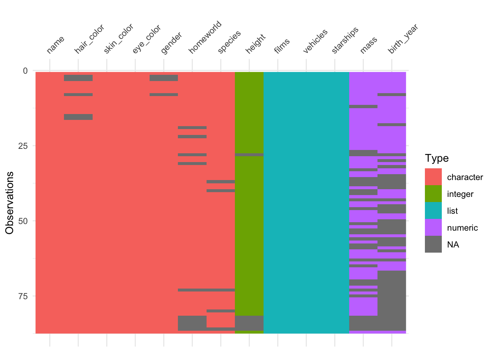

Class 4
Tobias Gerstenberg
January 14th, 2019
1 Data wrangling 1
In this lecture, we will take a look at how to wrangle data using the dplyr package. Again, getting our data into shape is something we’ll need to do throughout the course, so it’s worth spending some time getting a good sense for how this works. The nice thing about R is that (thanks to the tidyverse), both visualization and data wrangling are particularly powerful.
1.1 Learning objectives
- Review R basics (incl. variable modes, data types, operators, control flow, and functions).
- Learn how the pipe operator
%>%works. - See different ways for getting a sense of one’s data.
- Master key data manipulation verbs from the
dplyrpackage (incl.filter(),rename(),select(),mutate(), andarrange())
1.2 Load packages
Let’s first load the packages that we need for this chapter.
1.3 Some R basics
To test your knowledge of the R basics, I recommend taking the free interactive tutorial on datacamp: Introduction to R. Here, I will just give a very quick overview of some of the basics.
1.3.1 Modes
Variables in R can have different modes. Table shows the most common ones.
name = c("numeric", "character", "logical", 'not available')
example = c(
"`1`, `3`, `48`",
"`'Steve'`, `'a'`, `'78'`",
"`TRUE`, `FALSE`",
"`NA`")
kable(x = tibble(name, example),
caption = "Most commonly used variable modes in R.",
align = c("r", "l"),
booktabs = TRUE)| name | example |
|---|---|
| numeric | 1, 3, 48 |
| character | 'Steve', 'a', '78' |
| logical | TRUE, FALSE |
| not available | NA |
For characters you can either use " or '. R has a number of functions to convert a variable from one mode to another. NA is used for missing values.
tmp1 = "1" # we start with a character
str(tmp1)
#> chr "1"
tmp2 = as.numeric(tmp1) # turn it into a numeric
str(tmp2)
#> num 1
tmp3 = as.factor(tmp2) # turn that into a factor
str(tmp3)
#> Factor w/ 1 level "1": 1
tmp4 = as.character(tmp3) # and go full cycle by turning it back into a character
str(tmp4)
#> chr "1"
identical(tmp1, tmp4) # checks whether tmp1 and tmp4 are the same
#> [1] TRUEThe str() function displays the structure of an R object. Here, it shows us what mode the variable is.
1.3.2 Data types
R has a number of different data types. Table 1.2 shows the ones you’re most likely to come across (taken from this source):
| name | description |
|---|---|
| vector | list of values with of the same variable mode |
| factor | for ordinal variables |
| matrix | 2D data structure |
| array | same as matrix for higher dimensional data |
| data frame | similar to matrix but with column names |
| list | flexible type that can contain different other variable types |
1.3.2.1 Vectors
We build vectors using the concatenate function c(), and we use [] to access one or more elements of a vector.
numbers = c(1, 4, 5) # make a vector
numbers[2] # access the second element
#> [1] 4
numbers[1:2] # access the first two elements
#> [1] 1 4
numbers[c(1, 3)] # access the first and last element
#> [1] 1 5In R (unlike in Python for example), 1 refers to the first element of a vector (or list).
1.3.2.2 Matrix
We build a matrix using the matrix() function, and we use [] to access its elements.
matrix = matrix(data = c(1, 2, 3, 4, 5, 6), nrow = 3, ncol = 2)
matrix # the full matrix
#> [,1] [,2]
#> [1,] 1 4
#> [2,] 2 5
#> [3,] 3 6
matrix[1, 2] # element in row 1, column 2
#> [1] 4
matrix[1, ] # all elements in the first row
#> [1] 1 4
matrix[ , 1] # all elements in the first column
#> [1] 1 2 3
matrix[-1 , ] # a matrix which excludes the first row
#> [,1] [,2]
#> [1,] 2 5
#> [2,] 3 6Note how we use an empty placeholder to indicate that we want to select all the values in a row or column, and - to indicate that we want to remove something.
1.3.2.3 Array
Arrays work the same was as matrices with data of more than two dimensions.
1.3.2.4 Data frame
df = data_frame(participant_id = c(1, 2, 3),
participant_name = c("Leia", "Luke", "Darth")) # make the data frame
df # the complete data frame
#> # A tibble: 3 x 2
#> participant_id participant_name
#> <dbl> <chr>
#> 1 1 Leia
#> 2 2 Luke
#> 3 3 Darth
df[1, 2] # a single element using numbers
#> # A tibble: 1 x 1
#> participant_name
#> <chr>
#> 1 Leia
df$participant_id # all participants
#> [1] 1 2 3
df[["participant_id"]] # same as before but using [[]] instead of $
#> [1] 1 2 3
df$participant_name[2] # name of the second participant
#> [1] "Luke"
df[["participant_name"]][2] # same as above
#> [1] "Luke"We’ll use data frames a lot. Data frames are like a matrix with column names. Data frames are also more general than matrices in that different columns can have different modes. For example, one column might be a character, another one numeric, and another one a factor. You may sometimes also see a tibble instead of a data frame. A tibble is almost the same asa data frame but it has better defaults for formatting output in the console (more information on tibbles is here).
1.3.2.5 Lists
l.mixed = list(number = 1,
character = "2",
factor = factor(3),
matrix = matrix(1:4, ncol = 2),
df = data_frame(x = c(1, 2), y = c(3, 4)))
l.mixed
#> $number
#> [1] 1
#>
#> $character
#> [1] "2"
#>
#> $factor
#> [1] 3
#> Levels: 3
#>
#> $matrix
#> [,1] [,2]
#> [1,] 1 3
#> [2,] 2 4
#>
#> $df
#> # A tibble: 2 x 2
#> x y
#> <dbl> <dbl>
#> 1 1 3
#> 2 2 4
l.mixed$character
#> [1] "2"
l.mixed[['character']]
#> [1] "2"
l.mixed[[2]] # three different ways of accessing a list
#> [1] "2"Lists are a very flexible data format. You can put almost anything in a list. You can then access the elements of a list either using
tibble; same as data frame with better defaults for formatting output in the console; more information on tibbles
1.3.3 Operators
Table 1.3 shows the comparison operators that result in logical outputs.
| symbol | name |
|---|---|
== |
equal to |
!= |
not equal to |
>, < |
greater/less than |
>=, <= |
greater/less than or equal |
&, |, ! |
logical operators: and, or, not |
%in% |
checks whether an element is in an object |
1.3.4 Control flow
1.3.4.1 if-then
1.3.4.2 for loop
1.3.5 Functions
fun_addition = function(a, b){
x = a + b
return(str_c("The result is ", x))
}
fun_addition(1,2)
#> [1] "The result is 3"I’ve used the paste0() function here to concatenate the string with the number. (R converts the number x into a string for us.) Note, R functions can only return a single object. However, this object can be a list (which can contain anything).
1.3.5.1 Some often used functions
| name | description |
|---|---|
length() |
length of an object |
dim() |
dimensions of an object (e.g. number of rows and columns) |
rm() |
remove an object |
seq() |
generate a sequence of numbers |
rep() |
repeat something n times |
max() |
maximum |
min() |
minimum |
which.max() |
index of the maximum |
which.min() |
index of the maximum |
mean() |
mean |
median() |
median |
sum() |
sum |
var() |
variance |
sd() |
standard deviation |
1.3.6 The pipe operator %>%

Figure 1.1: Inspiration for the magrittr package name.
The pipe operator %>% is a special operator introduced in the magrittr package. It is used heavily in the tidyverse. The basic idea is simple: this operator allows us to “pipe” several functions into one long chain.
The logic is the following:
The pipe operator inserts the result of one computation as a first element into the next computation. So, a %>% sum(b) is equivalent to sum(a, b). We can also specify to insert the result at a different position via the . operator. For example:
Here, I used the . operator to specify that I woud like to insert the result of b where I’ve put the . in the seq() function. So far, the pipe operator may not seem particularly useful. One of the great features of the operator though is that it allows us to write code in an intuitive way that fits the order in which we would like to do stuff.
For example, consider that we want to calculate the root mean squared error between prediction and data. In base R, we would do the following.
data = c(1, 3, 4, 2, 5)
prediction = c(1, 2, 2, 1, 4)
# calculate root mean squared error
rmse = sqrt(mean((data-prediction)^2))
print(rmse)
#> [1] 1.183216Using the pipe operator makes the operation more intuitive:
data = c(1, 3, 4, 2, 5)
prediction = c(1, 2, 2, 1, 4)
# calculate root mean squared error the pipe way
rmse = (data-prediction)^2 %>% # first we calculate the squared difference
mean() %>% # then we take the mean
sqrt() %>% # and then the square root
print() # and finally we print the result
#> [1] 1.183216First, we calculate the squared error, then we take the mean, then the square root, and then print the result.
The pipe operator %>% is similar to the + used in ggplot2. It allows us to take step-by-step actions in a way that fits the causal ordering of how we want to do things.
1.4 Looking at data
The package dplyr which we loaded as part of the tidyverse, includes a data set with information about starwars characters. Let’s store this as df.starwars.
Note: Unlike in other languages (such as Python or Matlab), a
.in a variable name has no special meaning and can just be used as part of the name. I’ve useddfhere to indicate for myself that this variable is a data frame.
Before visualizing the data, it’s often useful to take a quick direct look at the data.
There are several ways of taking a look at data in R. Personally, I like to look at the data within RStudio’s data viewer. To do so, you can:
- click on the df.starwars variable in the “Environment” tab
- type View(df.starwars) in the console
- move your mouse over (or select) the variable in the editor (or console) and hit F2
I like the F2 route the best as it’s fast and flexible.
Sometimes it’s also helpful to look at data in the console instead of the data viewer. Particularly when the data is very large, the data viewer can be sluggish.
Here are some useful functions:
head(df.starwars)
#> # A tibble: 6 x 13
#> name height mass hair_color skin_color eye_color birth_year gender
#> <chr> <int> <dbl> <chr> <chr> <chr> <dbl> <chr>
#> 1 Luke… 172 77 blond fair blue 19 male
#> 2 C-3PO 167 75 <NA> gold yellow 112 <NA>
#> 3 R2-D2 96 32 <NA> white, bl… red 33 <NA>
#> 4 Dart… 202 136 none white yellow 41.9 male
#> 5 Leia… 150 49 brown light brown 19 female
#> 6 Owen… 178 120 brown, gr… light blue 52 male
#> # ... with 5 more variables: homeworld <chr>, species <chr>, films <list>,
#> # vehicles <list>, starships <list>Without any extra arguments specified, head() shows the top six rows of the data.
glimpse(df.starwars)
#> Observations: 87
#> Variables: 13
#> $ name <chr> "Luke Skywalker", "C-3PO", "R2-D2", "Darth Vader", ...
#> $ height <int> 172, 167, 96, 202, 150, 178, 165, 97, 183, 182, 188...
#> $ mass <dbl> 77.0, 75.0, 32.0, 136.0, 49.0, 120.0, 75.0, 32.0, 8...
#> $ hair_color <chr> "blond", NA, NA, "none", "brown", "brown, grey", "b...
#> $ skin_color <chr> "fair", "gold", "white, blue", "white", "light", "l...
#> $ eye_color <chr> "blue", "yellow", "red", "yellow", "brown", "blue",...
#> $ birth_year <dbl> 19.0, 112.0, 33.0, 41.9, 19.0, 52.0, 47.0, NA, 24.0...
#> $ gender <chr> "male", NA, NA, "male", "female", "male", "female",...
#> $ homeworld <chr> "Tatooine", "Tatooine", "Naboo", "Tatooine", "Alder...
#> $ species <chr> "Human", "Droid", "Droid", "Human", "Human", "Human...
#> $ films <list> [<"Revenge of the Sith", "Return of the Jedi", "Th...
#> $ vehicles <list> [<"Snowspeeder", "Imperial Speeder Bike">, <>, <>,...
#> $ starships <list> [<"X-wing", "Imperial shuttle">, <>, <>, "TIE Adva...glimpse() is helpful when the data frame has many columns. The data is shown in a transposed way with columns as rows.
df.starwars %>%
distinct(name) %>%
head()
#> # A tibble: 6 x 1
#> name
#> <chr>
#> 1 Luke Skywalker
#> 2 C-3PO
#> 3 R2-D2
#> 4 Darth Vader
#> 5 Leia Organa
#> 6 Owen Larsdistinct() shows all the distinct values for a character or factor column.
df.starwars %>%
count(gender)
#> # A tibble: 5 x 2
#> gender n
#> <chr> <int>
#> 1 female 19
#> 2 hermaphrodite 1
#> 3 male 62
#> 4 none 2
#> 5 <NA> 3count() shows a count of all the different distinct values in a column.
It’s possible to do grouped counts by combining several variables.
df.starwars %>%
count(species, gender) %>%
head(n = 10)
#> # A tibble: 10 x 3
#> species gender n
#> <chr> <chr> <int>
#> 1 Aleena male 1
#> 2 Besalisk male 1
#> 3 Cerean male 1
#> 4 Chagrian male 1
#> 5 Clawdite female 1
#> 6 Droid none 2
#> 7 Droid <NA> 3
#> 8 Dug male 1
#> 9 Ewok male 1
#> 10 Geonosian male 1By default, count() results in a data frame that only lists combinations that actually exist. If you’d like to have all the values, the following code will do:
df.starwars %>%
count(species, gender) %>%
complete(species, gender, fill = list(n = 0)) %>%
head(n = 10)
#> # A tibble: 10 x 3
#> species gender n
#> <chr> <chr> <dbl>
#> 1 Aleena female 0
#> 2 Aleena hermaphrodite 0
#> 3 Aleena male 1
#> 4 Aleena none 0
#> 5 Aleena <NA> 0
#> 6 Besalisk female 0
#> 7 Besalisk hermaphrodite 0
#> 8 Besalisk male 1
#> 9 Besalisk none 0
#> 10 Besalisk <NA> 0Here, I’ve used the complete() function to generate all the combinations of species and gender, and told the function to fill in the value 0 for those combinations that don’t exist.
You can also add counts to a data frame.
df.starwars %>%
add_count(species) %>%
head()
#> # A tibble: 6 x 14
#> name height mass hair_color skin_color eye_color birth_year gender
#> <chr> <int> <dbl> <chr> <chr> <chr> <dbl> <chr>
#> 1 Luke… 172 77 blond fair blue 19 male
#> 2 C-3PO 167 75 <NA> gold yellow 112 <NA>
#> 3 R2-D2 96 32 <NA> white, bl… red 33 <NA>
#> 4 Dart… 202 136 none white yellow 41.9 male
#> 5 Leia… 150 49 brown light brown 19 female
#> 6 Owen… 178 120 brown, gr… light blue 52 male
#> # ... with 6 more variables: homeworld <chr>, species <chr>, films <list>,
#> # vehicles <list>, starships <list>, n <int>For RMardkown files specifically, we can use the datatable() function from the DT package to get an interactive
1.4.1 Other tools for taking a quick look at data

The vis_dat() function from the visdat package, gives a visuall summary that makes it easy to see the variable types and whether there are missing values in the data.
When R loads packages, functions loaded in earlier packages are overwritten by functions of the same name from later packages. This means that the order in which packages are loaded matters. To make sure that a function from the correct package is used, you can use the package_name::function_name() construction. This way, the function_name() from the package_name is used, rather than the same function from a different package.
This is why, in general, I recommend to load the tidyverse package last (since it contains a large number of functions that we use a lot).
# install.packages("skimr")
skimr::skim(df.starwars)
#> Skim summary statistics
#> n obs: 87
#> n variables: 13
#>
#> ── Variable type:character ────────────────────────────────────────────────────────────────────────────────────────────────────────────────────────────────────
#> variable missing complete n min max empty n_unique
#> eye_color 0 87 87 3 13 0 15
#> gender 3 84 87 4 13 0 4
#> hair_color 5 82 87 4 13 0 12
#> homeworld 10 77 87 4 14 0 48
#> name 0 87 87 3 21 0 87
#> skin_color 0 87 87 3 19 0 31
#> species 5 82 87 3 14 0 37
#>
#> ── Variable type:integer ──────────────────────────────────────────────────────────────────────────────────────────────────────────────────────────────────────
#> variable missing complete n mean sd p0 p25 p50 p75 p100 hist
#> height 6 81 87 174.36 34.77 66 167 180 191 264 ▁▁▁▂▇▃▁▁
#>
#> ── Variable type:list ─────────────────────────────────────────────────────────────────────────────────────────────────────────────────────────────────────────
#> variable missing complete n n_unique min_length median_length
#> films 0 87 87 24 1 1
#> starships 0 87 87 17 0 0
#> vehicles 0 87 87 11 0 0
#> max_length
#> 7
#> 5
#> 2
#>
#> ── Variable type:numeric ──────────────────────────────────────────────────────────────────────────────────────────────────────────────────────────────────────
#> variable missing complete n mean sd p0 p25 p50 p75 p100
#> birth_year 44 43 87 87.57 154.69 8 35 52 72 896
#> mass 28 59 87 97.31 169.46 15 55.6 79 84.5 1358
#> hist
#> ▇▁▁▁▁▁▁▁
#> ▇▁▁▁▁▁▁▁The skim() function from the skimr package provides a nice overview of the data, separated by variable types.
# install.packages("summarytools")
df.starwars %>%
select_if(negate(is.list)) %>% # this removes all list columns (we'll learn about this later)
summarytools::dfSummary() %>%
summarytools::view()The summarytools package is another great package for taking a look at the data. It renders a nice html output for the data frame including a lot of helpful information. You can find out more about this package here.
Once we’ve taken a look at the data, the next step would be to visualize relationships between variables of interest.
1.4.2 A quick note on naming things
Personally, I like to name things in a (pretty) consistent way so that I have no trouble finding stuff even when I open up a project that I haven’t worked on for a while. I try to use the following naming conventions:
| name | use |
|---|---|
| df.thing | for data frames |
| l.thing | for lists |
| fun.thing | for functions |
| tmp.thing | for temporary variables |
1.5 Wrangling data
We use the functions in the package dplyr to manipulate our data.
1.5.1 filter()
df.starwars %>%
filter(gender == 'male') %>%
head()
#> # A tibble: 6 x 13
#> name height mass hair_color skin_color eye_color birth_year gender
#> <chr> <int> <dbl> <chr> <chr> <chr> <dbl> <chr>
#> 1 Luke… 172 77 blond fair blue 19 male
#> 2 Dart… 202 136 none white yellow 41.9 male
#> 3 Owen… 178 120 brown, gr… light blue 52 male
#> 4 Bigg… 183 84 black light brown 24 male
#> 5 Obi-… 182 77 auburn, w… fair blue-gray 57 male
#> 6 Anak… 188 84 blond fair blue 41.9 male
#> # ... with 5 more variables: homeworld <chr>, species <chr>, films <list>,
#> # vehicles <list>, starships <list>filter() lets us apply logical operators (see Table 1.3) to subset the data. Here, I’ve filtered out the male characters.
df.starwars %>%
filter(gender == 'male',
height > median(height, na.rm = T),
!is.na(mass)) %>%
head()
#> # A tibble: 6 x 13
#> name height mass hair_color skin_color eye_color birth_year gender
#> <chr> <int> <dbl> <chr> <chr> <chr> <dbl> <chr>
#> 1 Dart… 202 136 none white yellow 41.9 male
#> 2 Bigg… 183 84 black light brown 24 male
#> 3 Obi-… 182 77 auburn, w… fair blue-gray 57 male
#> 4 Anak… 188 84 blond fair blue 41.9 male
#> 5 Chew… 228 112 brown unknown blue 200 male
#> 6 Boba… 183 78.2 black fair brown 31.5 male
#> # ... with 5 more variables: homeworld <chr>, species <chr>, films <list>,
#> # vehicles <list>, starships <list>We can combine multiple conditions in the same call. Here, I’ve filtered out male characters, whose height is greater than the median height (i.e. in the top 50 percentile), and whose mass was not NA.
Many functions like mean(), median(), var(), sd(), sum() have the argument na.rm which is set to FALSE by default. I set the argument to TRUE here (or T for short), which means that the NA values are ignored, and the median() is calculated based on the remaning values.
You can use , and & interchangeably in filter(). Make sure to use parentheses when using several logical operators to indicate which logical operation should be performed first:
df.starwars %>%
filter((skin_color %in% c("dark", "pale") | gender == "hermaphrodite") & height > 170)
#> # A tibble: 10 x 13
#> name height mass hair_color skin_color eye_color birth_year gender
#> <chr> <int> <dbl> <chr> <chr> <chr> <dbl> <chr>
#> 1 Jabb… 175 1358 <NA> green-tan… orange 600 herma…
#> 2 Land… 177 79 black dark brown 31 male
#> 3 Quar… 183 NA black dark brown 62 male
#> 4 Bib … 180 NA none pale pink NA male
#> 5 Mace… 188 84 none dark brown 72 male
#> 6 Ki-A… 198 82 white pale yellow 92 male
#> 7 Adi … 184 50 none dark blue NA female
#> 8 Saes… 188 NA none pale orange NA male
#> 9 Greg… 185 85 black dark brown NA male
#> 10 Sly … 178 48 none pale white NA female
#> # ... with 5 more variables: homeworld <chr>, species <chr>, films <list>,
#> # vehicles <list>, starships <list>The starwars characters that have either a "dark" or a "pale" skin tone, or whose gender is "hermaphrodite", and whose height is at least 170 cm. The %in% operator is useful when there are multiple options. Instead of skin_color %in% c("dark", "pale"), I could have also written skin_color == "dark" | skin_color == "pale" but this gets cumbersome as the options increase.
1.5.2 rename()
rename() renames column names.
df.starwars %>%
rename(person = name,
mass_kg = mass) %>%
head()
#> # A tibble: 6 x 13
#> person height mass_kg hair_color skin_color eye_color birth_year gender
#> <chr> <int> <dbl> <chr> <chr> <chr> <dbl> <chr>
#> 1 Luke … 172 77 blond fair blue 19 male
#> 2 C-3PO 167 75 <NA> gold yellow 112 <NA>
#> 3 R2-D2 96 32 <NA> white, bl… red 33 <NA>
#> 4 Darth… 202 136 none white yellow 41.9 male
#> 5 Leia … 150 49 brown light brown 19 female
#> 6 Owen … 178 120 brown, gr… light blue 52 male
#> # ... with 5 more variables: homeworld <chr>, species <chr>, films <list>,
#> # vehicles <list>, starships <list>To rename many variables at the same time use set_names():
df.starwars %>%
set_names(letters[1:ncol(.)]) %>% #renamed all variables to letters: a, b, ...
head()
#> # A tibble: 6 x 13
#> a b c d e f g h i j k l
#> <chr> <int> <dbl> <chr> <chr> <chr> <dbl> <chr> <chr> <chr> <lis> <lis>
#> 1 Luke … 172 77 blond fair blue 19 male Tato… Human <chr… <chr…
#> 2 C-3PO 167 75 <NA> gold yell… 112 <NA> Tato… Droid <chr… <chr…
#> 3 R2-D2 96 32 <NA> whit… red 33 <NA> Naboo Droid <chr… <chr…
#> 4 Darth… 202 136 none white yell… 41.9 male Tato… Human <chr… <chr…
#> 5 Leia … 150 49 brown light brown 19 fema… Alde… Human <chr… <chr…
#> 6 Owen … 178 120 brown… light blue 52 male Tato… Human <chr… <chr…
#> # ... with 1 more variable: m <list>1.5.3 select()
select() allows us to select a subset of the columns in the data frame.
df.starwars %>%
select(name, height, mass) %>%
head()
#> # A tibble: 6 x 3
#> name height mass
#> <chr> <int> <dbl>
#> 1 Luke Skywalker 172 77
#> 2 C-3PO 167 75
#> 3 R2-D2 96 32
#> 4 Darth Vader 202 136
#> 5 Leia Organa 150 49
#> 6 Owen Lars 178 120We can select multiple columns using the (from:to) syntax:
df.starwars %>%
select(name:birth_year) %>% #from name to birth_year
head()
#> # A tibble: 6 x 7
#> name height mass hair_color skin_color eye_color birth_year
#> <chr> <int> <dbl> <chr> <chr> <chr> <dbl>
#> 1 Luke Skywalker 172 77 blond fair blue 19
#> 2 C-3PO 167 75 <NA> gold yellow 112
#> 3 R2-D2 96 32 <NA> white, blue red 33
#> 4 Darth Vader 202 136 none white yellow 41.9
#> 5 Leia Organa 150 49 brown light brown 19
#> 6 Owen Lars 178 120 brown, grey light blue 52Or use a variable for column selection:
columns = c("name", "height", "species")
df.starwars %>%
select(one_of(columns)) %>% # useful when using a variable for column selection
head()
#> # A tibble: 6 x 3
#> name height species
#> <chr> <int> <chr>
#> 1 Luke Skywalker 172 Human
#> 2 C-3PO 167 Droid
#> 3 R2-D2 96 Droid
#> 4 Darth Vader 202 Human
#> 5 Leia Organa 150 Human
#> 6 Owen Lars 178 HumanWe can also deselect (multiple) columns:
df.starwars %>%
select(-name, -(birth_year:vehicles)) %>%
head()
#> # A tibble: 6 x 6
#> height mass hair_color skin_color eye_color starships
#> <int> <dbl> <chr> <chr> <chr> <list>
#> 1 172 77 blond fair blue <chr [2]>
#> 2 167 75 <NA> gold yellow <chr [0]>
#> 3 96 32 <NA> white, blue red <chr [0]>
#> 4 202 136 none white yellow <chr [1]>
#> 5 150 49 brown light brown <chr [0]>
#> 6 178 120 brown, grey light blue <chr [0]>And select columns by partially matching the column name:
df.starwars %>%
select(contains("_")) %>% # every column that contains the character "_"
head()
#> # A tibble: 6 x 4
#> hair_color skin_color eye_color birth_year
#> <chr> <chr> <chr> <dbl>
#> 1 blond fair blue 19
#> 2 <NA> gold yellow 112
#> 3 <NA> white, blue red 33
#> 4 none white yellow 41.9
#> 5 brown light brown 19
#> 6 brown, grey light blue 52
df.starwars %>%
select(starts_with("h")) %>% # every column that starts with an "h"
head()
#> # A tibble: 6 x 3
#> height hair_color homeworld
#> <int> <chr> <chr>
#> 1 172 blond Tatooine
#> 2 167 <NA> Tatooine
#> 3 96 <NA> Naboo
#> 4 202 none Tatooine
#> 5 150 brown Alderaan
#> 6 178 brown, grey TatooineWe can also use select() to reorder the columns:
df.starwars %>%
select(eye_color, everything()) %>% # useful trick for changing the column order, now eye_color and birth_year are at the beginning
head()
#> # A tibble: 6 x 13
#> eye_color name height mass hair_color skin_color birth_year gender
#> <chr> <chr> <int> <dbl> <chr> <chr> <dbl> <chr>
#> 1 blue Luke… 172 77 blond fair 19 male
#> 2 yellow C-3PO 167 75 <NA> gold 112 <NA>
#> 3 red R2-D2 96 32 <NA> white, bl… 33 <NA>
#> 4 yellow Dart… 202 136 none white 41.9 male
#> 5 brown Leia… 150 49 brown light 19 female
#> 6 blue Owen… 178 120 brown, gr… light 52 male
#> # ... with 5 more variables: homeworld <chr>, species <chr>, films <list>,
#> # vehicles <list>, starships <list>Here, I’ve moved the eye_color column to the beginning of the data frame. everything() is a helper function which selects all the columns.
df.starwars %>%
select(-eye_color, everything(), eye_color) %>% # move eye_color to the end
head()
#> # A tibble: 6 x 13
#> name height mass hair_color skin_color birth_year gender homeworld
#> <chr> <int> <dbl> <chr> <chr> <dbl> <chr> <chr>
#> 1 Luke… 172 77 blond fair 19 male Tatooine
#> 2 C-3PO 167 75 <NA> gold 112 <NA> Tatooine
#> 3 R2-D2 96 32 <NA> white, bl… 33 <NA> Naboo
#> 4 Dart… 202 136 none white 41.9 male Tatooine
#> 5 Leia… 150 49 brown light 19 female Alderaan
#> 6 Owen… 178 120 brown, gr… light 52 male Tatooine
#> # ... with 5 more variables: species <chr>, films <list>, vehicles <list>,
#> # starships <list>, eye_color <chr>Here, I’ve moved eye_color to the end. Note that I had to deselect it first.
We can select columns based on their data type using select_if().
df.starwars %>%
select_if(is.numeric) %>% # just select numeric columns
head()
#> # A tibble: 6 x 3
#> height mass birth_year
#> <int> <dbl> <dbl>
#> 1 172 77 19
#> 2 167 75 112
#> 3 96 32 33
#> 4 202 136 41.9
#> 5 150 49 19
#> 6 178 120 52The following selects all columns that are not numeric:
df.starwars %>%
select_if(funs(!is.numeric(.))) %>% # selects all columns that are not numeric
head()
#> # A tibble: 6 x 10
#> name hair_color skin_color eye_color gender homeworld species films
#> <chr> <chr> <chr> <chr> <chr> <chr> <chr> <lis>
#> 1 Luke… blond fair blue male Tatooine Human <chr…
#> 2 C-3PO <NA> gold yellow <NA> Tatooine Droid <chr…
#> 3 R2-D2 <NA> white, bl… red <NA> Naboo Droid <chr…
#> 4 Dart… none white yellow male Tatooine Human <chr…
#> 5 Leia… brown light brown female Alderaan Human <chr…
#> 6 Owen… brown, gr… light blue male Tatooine Human <chr…
#> # ... with 2 more variables: vehicles <list>, starships <list>Note that I needed to use the funs() helper function here.
It’s also possible to select columns based on logical criteria. For example, this bit of code selects columns whose mean value is greater than 90.
df.starwars %>%
select_if(funs(is.numeric(.) & mean(., na.rm = T) > 90)) %>%
head()
#> Warning in mean.default(., na.rm = T): argument is not numeric or logical:
#> returning NA
#> Warning in mean.default(., na.rm = T): argument is not numeric or logical:
#> returning NA
#> Warning in mean.default(., na.rm = T): argument is not numeric or logical:
#> returning NA
#> Warning in mean.default(., na.rm = T): argument is not numeric or logical:
#> returning NA
#> Warning in mean.default(., na.rm = T): argument is not numeric or logical:
#> returning NA
#> Warning in mean.default(., na.rm = T): argument is not numeric or logical:
#> returning NA
#> Warning in mean.default(., na.rm = T): argument is not numeric or logical:
#> returning NA
#> Warning in mean.default(., na.rm = T): argument is not numeric or logical:
#> returning NA
#> Warning in mean.default(., na.rm = T): argument is not numeric or logical:
#> returning NA
#> Warning in mean.default(., na.rm = T): argument is not numeric or logical:
#> returning NA
#> # A tibble: 6 x 2
#> height mass
#> <int> <dbl>
#> 1 172 77
#> 2 167 75
#> 3 96 32
#> 4 202 136
#> 5 150 49
#> 6 178 120We can rename some of the columns using select like so:
df.starwars %>%
select(person = name, height, mass_kg = mass) %>%
head()
#> # A tibble: 6 x 3
#> person height mass_kg
#> <chr> <int> <dbl>
#> 1 Luke Skywalker 172 77
#> 2 C-3PO 167 75
#> 3 R2-D2 96 32
#> 4 Darth Vader 202 136
#> 5 Leia Organa 150 49
#> 6 Owen Lars 178 120When you have a data frame with row names, you can convert the row names to a separate column using the rownames_to_column() function.
For more details, take a look at the help file for select(), and this this great tutorial in which I learned about some of the more advanced ways of using select().
1.5.4 mutate()
mutate() is used to change exisitng columns or make new ones.
df.starwars %>%
mutate(height = height / 100, # to get height in meters
bmi = mass/(height^2)) %>% #bmi = kg/(m^2)
select(name, height, mass, bmi) %>%
head()
#> # A tibble: 6 x 4
#> name height mass bmi
#> <chr> <dbl> <dbl> <dbl>
#> 1 Luke Skywalker 1.72 77 26.0
#> 2 C-3PO 1.67 75 26.9
#> 3 R2-D2 0.96 32 34.7
#> 4 Darth Vader 2.02 136 33.3
#> 5 Leia Organa 1.5 49 21.8
#> 6 Owen Lars 1.78 120 37.9Here, I’ve calculated the bmi for the different starwars characters. I first mutated the height variable by going from cm to m, and then created the new column “bmi”.
A useful helper function for mutate() is ifelse() which is a shorthand for the if-else control flow (Section 1.3.4.1). Here is an example:
df.starwars %>%
mutate(height_categorical = ifelse(height > median(height, na.rm = T), 'tall', 'short')) %>%
select(name, contains("height"))
#> # A tibble: 87 x 3
#> name height height_categorical
#> <chr> <int> <chr>
#> 1 Luke Skywalker 172 short
#> 2 C-3PO 167 short
#> 3 R2-D2 96 short
#> 4 Darth Vader 202 tall
#> 5 Leia Organa 150 short
#> 6 Owen Lars 178 short
#> 7 Beru Whitesun lars 165 short
#> 8 R5-D4 97 short
#> 9 Biggs Darklighter 183 tall
#> 10 Obi-Wan Kenobi 182 tall
#> # ... with 77 more rowsifelse() works in the following way: we first specify the condition, then what should be returned if the condition is true, and finally what should be returned otherwise. The more verbose version of the statement above would be: ifelse(test = height > median(height, na.rm = T), yes = 'tall', no = 'short')
There are a number of variants of the mutate() function. Let’s take a look at them.
1.5.4.1 mutate_at()
With mutate_at(), we can mutate several columns at the same time.
df.starwars %>%
mutate_at(vars(height, mass, birth_year), funs(scale))
#> # A tibble: 87 x 13
#> name height mass hair_color skin_color eye_color birth_year gender
#> <chr> <dbl> <dbl> <chr> <chr> <chr> <dbl> <chr>
#> 1 Luke… -0.0678 -0.120 blond fair blue -0.443 male
#> 2 C-3PO -0.212 -0.132 <NA> gold yellow 0.158 <NA>
#> 3 R2-D2 -2.25 -0.385 <NA> white, bl… red -0.353 <NA>
#> 4 Dart… 0.795 0.228 none white yellow -0.295 male
#> 5 Leia… -0.701 -0.285 brown light brown -0.443 female
#> 6 Owen… 0.105 0.134 brown, gr… light blue -0.230 male
#> 7 Beru… -0.269 -0.132 brown light blue -0.262 female
#> 8 R5-D4 -2.22 -0.385 <NA> white, red red NA <NA>
#> 9 Bigg… 0.249 -0.0786 black light brown -0.411 male
#> 10 Obi-… 0.220 -0.120 auburn, w… fair blue-gray -0.198 male
#> # ... with 77 more rows, and 5 more variables: homeworld <chr>,
#> # species <chr>, films <list>, vehicles <list>, starships <list>vars() and funs() are helper functions. In vars() I’ve specified what variables to mutate, and in funs() I’ve specified what to do with the variables. Here, I’ve z-scored height, mass, and birth_year using the scale() function. Note that I wrote the function without (). The funs() helper expects a list of functions that can be specified by:
- their name, “mean”
- the function itself,
mean - a call to the function with
.as a dummy argument,mean(.)
Within vars(), we can use the same helper functions for selecting columns that we’ve seen above for select().
We can also use names to create new columns:
df.starwars %>%
mutate_at(vars(height, mass, birth_year), funs(z = scale)) %>%
select(name, contains("height"), contains("mass"), contains("birth_year"))
#> # A tibble: 87 x 7
#> name height height_z mass mass_z birth_year birth_year_z
#> <chr> <int> <dbl> <dbl> <dbl> <dbl> <dbl>
#> 1 Luke Skywalker 172 -0.0678 77 -0.120 19 -0.443
#> 2 C-3PO 167 -0.212 75 -0.132 112 0.158
#> 3 R2-D2 96 -2.25 32 -0.385 33 -0.353
#> 4 Darth Vader 202 0.795 136 0.228 41.9 -0.295
#> 5 Leia Organa 150 -0.701 49 -0.285 19 -0.443
#> 6 Owen Lars 178 0.105 120 0.134 52 -0.230
#> 7 Beru Whitesun lars 165 -0.269 75 -0.132 47 -0.262
#> 8 R5-D4 97 -2.22 32 -0.385 NA NA
#> 9 Biggs Darklighter 183 0.249 84 -0.0786 24 -0.411
#> 10 Obi-Wan Kenobi 182 0.220 77 -0.120 57 -0.198
#> # ... with 77 more rowsAs we can see, new columns were created with _z added to the end of the column name.
And we can apply several functions at the same time.
df.starwars %>%
mutate_at(vars(height, mass, birth_year),
funs(z = scale,
centered = scale(., scale = FALSE))) %>%
select(name, contains("height"), contains("mass"), contains("birth_year"))
#> # A tibble: 87 x 10
#> name height height_z height_centered mass mass_z mass_centered
#> <chr> <int> <dbl> <dbl> <dbl> <dbl> <dbl>
#> 1 Luke… 172 -0.0678 -2.36 77 -0.120 -20.3
#> 2 C-3PO 167 -0.212 -7.36 75 -0.132 -22.3
#> 3 R2-D2 96 -2.25 -78.4 32 -0.385 -65.3
#> 4 Dart… 202 0.795 27.6 136 0.228 38.7
#> 5 Leia… 150 -0.701 -24.4 49 -0.285 -48.3
#> 6 Owen… 178 0.105 3.64 120 0.134 22.7
#> 7 Beru… 165 -0.269 -9.36 75 -0.132 -22.3
#> 8 R5-D4 97 -2.22 -77.4 32 -0.385 -65.3
#> 9 Bigg… 183 0.249 8.64 84 -0.0786 -13.3
#> 10 Obi-… 182 0.220 7.64 77 -0.120 -20.3
#> # ... with 77 more rows, and 3 more variables: birth_year <dbl>,
#> # birth_year_z <dbl>, birth_year_centered <dbl>Here, I’ve created z-scored and centered (i.e. only subtracted the mean but didn’t divide by the standard deviation) versions of the height, mass, and birth_year columns in one go.
1.5.4.2 mutate_all()
mutate_all() is used to mutate all columns in a data frame.
df.starwars %>%
select(height, mass) %>%
mutate_all(funs(as.character)) #transform all columns to characters
#> # A tibble: 87 x 2
#> height mass
#> <chr> <chr>
#> 1 172 77
#> 2 167 75
#> 3 96 32
#> 4 202 136
#> 5 150 49
#> 6 178 120
#> 7 165 75
#> 8 97 32
#> 9 183 84
#> 10 182 77
#> # ... with 77 more rowsHere, I’ve selected some columns first, and then changed the mode to character in each of them.
Like we’ve seen with mutate_at(), you can add a name in the mutate_all() function call to make new columns instead of replacing the existing ones.
df.starwars %>%
select(height, mass) %>%
mutate_all(funs(char = as.character)) #make new character columns
#> # A tibble: 87 x 4
#> height mass height_char mass_char
#> <int> <dbl> <chr> <chr>
#> 1 172 77 172 77
#> 2 167 75 167 75
#> 3 96 32 96 32
#> 4 202 136 202 136
#> 5 150 49 150 49
#> 6 178 120 178 120
#> 7 165 75 165 75
#> 8 97 32 97 32
#> 9 183 84 183 84
#> 10 182 77 182 77
#> # ... with 77 more rows1.5.4.3 mutate_if()
mutate_if() can sometimes come in handy. For example, the following code changes all the numeric columns to character columns:
df.starwars %>%
mutate_if(is.numeric, as.character)
#> # A tibble: 87 x 13
#> name height mass hair_color skin_color eye_color birth_year gender
#> <chr> <chr> <chr> <chr> <chr> <chr> <chr> <chr>
#> 1 Luke… 172 77 blond fair blue 19 male
#> 2 C-3PO 167 75 <NA> gold yellow 112 <NA>
#> 3 R2-D2 96 32 <NA> white, bl… red 33 <NA>
#> 4 Dart… 202 136 none white yellow 41.9 male
#> 5 Leia… 150 49 brown light brown 19 female
#> 6 Owen… 178 120 brown, gr… light blue 52 male
#> 7 Beru… 165 75 brown light blue 47 female
#> 8 R5-D4 97 32 <NA> white, red red <NA> <NA>
#> 9 Bigg… 183 84 black light brown 24 male
#> 10 Obi-… 182 77 auburn, w… fair blue-gray 57 male
#> # ... with 77 more rows, and 5 more variables: homeworld <chr>,
#> # species <chr>, films <list>, vehicles <list>, starships <list>Or we can round all the numeric columns:
df.starwars %>%
mutate_if(is.numeric, round) %>%
head()
#> # A tibble: 6 x 13
#> name height mass hair_color skin_color eye_color birth_year gender
#> <chr> <dbl> <dbl> <chr> <chr> <chr> <dbl> <chr>
#> 1 Luke… 172 77 blond fair blue 19 male
#> 2 C-3PO 167 75 <NA> gold yellow 112 <NA>
#> 3 R2-D2 96 32 <NA> white, bl… red 33 <NA>
#> 4 Dart… 202 136 none white yellow 42 male
#> 5 Leia… 150 49 brown light brown 19 female
#> 6 Owen… 178 120 brown, gr… light blue 52 male
#> # ... with 5 more variables: homeworld <chr>, species <chr>, films <list>,
#> # vehicles <list>, starships <list>1.5.5 arrange()
arrange() allows us to sort the values in a data frame by one or more column entries.
df.starwars %>%
arrange(gender, desc(height))
#> # A tibble: 87 x 13
#> name height mass hair_color skin_color eye_color birth_year gender
#> <chr> <int> <dbl> <chr> <chr> <chr> <dbl> <chr>
#> 1 Taun… 213 NA none grey black NA female
#> 2 Adi … 184 50 none dark blue NA female
#> 3 Ayla… 178 55 none blue hazel 48 female
#> 4 Shaa… 178 57 none red, blue… black NA female
#> 5 Sly … 178 48 none pale white NA female
#> 6 Lumi… 170 56.2 black yellow blue 58 female
#> 7 Zam … 168 55 blonde fair, gre… yellow NA female
#> 8 Joca… 167 NA white fair blue NA female
#> 9 Barr… 166 50 black yellow blue 40 female
#> 10 Beru… 165 75 brown light blue 47 female
#> # ... with 77 more rows, and 5 more variables: homeworld <chr>,
#> # species <chr>, films <list>, vehicles <list>, starships <list>Here, I’ve sorted the data frame first by gender, and then by height. I’ve used the desc() function to sort height in descending order. The first entry in the output is now the tallest female starwars character.
1.6 Additional resources
1.6.1 Cheatsheets
- base R –> summary of how to use base R (we will mostly use the tidyverse but it’s still important to know how to do things in base R)
- data transformation –> transforming data using
dplyr
1.6.2 Data camp courses
1.6.3 Books and chapters
1.7 Session info
Information about this R session including which version of R was used, and what packages were loaded.
sessionInfo()
#> R version 3.5.2 (2018-12-20)
#> Platform: x86_64-apple-darwin15.6.0 (64-bit)
#> Running under: macOS Mojave 10.14.2
#>
#> Matrix products: default
#> BLAS: /Library/Frameworks/R.framework/Versions/3.5/Resources/lib/libRblas.0.dylib
#> LAPACK: /Library/Frameworks/R.framework/Versions/3.5/Resources/lib/libRlapack.dylib
#>
#> locale:
#> [1] en_US.UTF-8/en_US.UTF-8/en_US.UTF-8/C/en_US.UTF-8/en_US.UTF-8
#>
#> attached base packages:
#> [1] stats graphics grDevices utils datasets methods base
#>
#> other attached packages:
#> [1] bindrcpp_0.2.2 DT_0.5 forcats_0.3.0 stringr_1.3.1
#> [5] dplyr_0.7.8 purrr_0.2.5 readr_1.3.0 tidyr_0.8.2
#> [9] tibble_1.4.2 ggplot2_3.1.0 tidyverse_1.2.1 knitr_1.20
#>
#> loaded via a namespace (and not attached):
#> [1] tidyselect_0.2.5 xfun_0.4 haven_2.0.0
#> [4] lattice_0.20-38 colorspace_1.3-2 htmltools_0.3.6
#> [7] yaml_2.2.0 utf8_1.1.4 rlang_0.3.0.1
#> [10] later_0.7.5 pillar_1.3.1 glue_1.3.0
#> [13] withr_2.1.2 modelr_0.1.2 readxl_1.1.0
#> [16] bindr_0.1.1 plyr_1.8.4 munsell_0.5.0
#> [19] gtable_0.2.0 cellranger_1.1.0 rvest_0.3.2
#> [22] htmlwidgets_1.3 evaluate_0.12 labeling_0.3
#> [25] httpuv_1.4.5.1 crosstalk_1.0.0 fansi_0.4.0
#> [28] highr_0.7 broom_0.5.0 Rcpp_1.0.0
#> [31] xtable_1.8-3 promises_1.0.1 scales_1.0.0
#> [34] backports_1.1.2 jsonlite_1.6 mime_0.6
#> [37] hms_0.4.2 digest_0.6.18 stringi_1.2.4
#> [40] visdat_0.5.1 shiny_1.2.0 bookdown_0.7
#> [43] grid_3.5.2 rprojroot_1.3-2 cli_1.0.1
#> [46] tools_3.5.2 magrittr_1.5 lazyeval_0.2.1
#> [49] crayon_1.3.4 pkgconfig_2.0.2 xml2_1.2.0
#> [52] skimr_1.0.3 lubridate_1.7.4 assertthat_0.2.0
#> [55] rmarkdown_1.10 httr_1.3.1 rstudioapi_0.8.0.9000
#> [58] R6_2.3.0 nlme_3.1-137 compiler_3.5.2